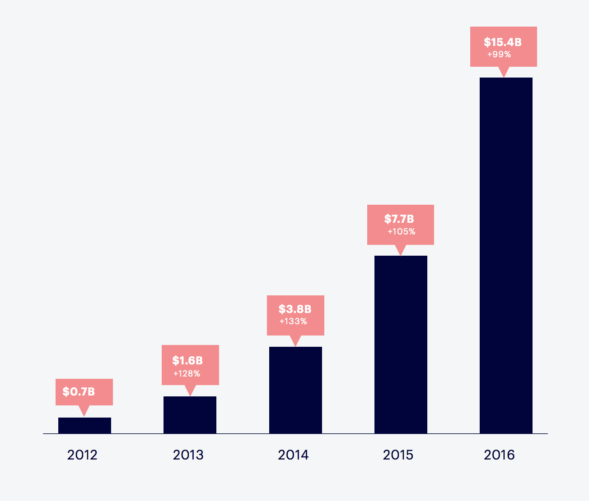

layout: true class: center, middle <div class="footer"><code>https://github.com/cfournie/navigating_a_warehouse_via_cli</code></div> --- # Navigating a Data Warehouse<br>via CLI <br> <span style="font-size: 0.8em">Chris Fournier (@cfournie)</span> <br><br><br> ??? Hi, I'm Chris Fournier, I work at Shopify, and I'm going to talk to you about some simple scripts we wrote to navigate our data warehouse and the UNIX tools that we combine them with to get the most out of them. In case you haven't heard of Shopify... --- background-color: #FFFFFF background-image: url(./frontpage.png) background-position: center background-repeat: no-repeat ??? ... we provide a platform for people to sell products online or in person. And the specific team that I work on develops software for and maintains a data warehouse ... --- ## Data Warehouse *Platform* to collect, store, analyze, and report on *data* ??? ... or a platform used to collect, store, analyze, and report on data from our systems. Our analysts use it to answer questions about the performance of Shopify as a business, our products, and our features. --- <h3 style="margin: 0.5em 0 0.5em 0">Gross Merchandise Volume</h3>  ??? One example of a question that we try to answer for Shopify as a whole is: "What is the total value of everything sold through our platform?" Or Gross Merchandise Volume (GMV). That's one of the metrics that we use as a company to gauge our success. This is not a trivial number to calculate given the volume of orders and transactions that we process for our merchants and what we join this dataset against to be able to break this number down by payment gateway, industry, monthly recurring revenue, etc. In 2016 alone we had over $15 billion dollars worth of GMV and that's a lot of rows. We're also continuously processing data to keep these numbers up to date. But from a broad technical perspective, how is this data processed? Sources: https://www.slideshare.net/SolmazShahalizadeh/building-a-financial-data-warehouse-a-lesson-in-empathy https://s2.q4cdn.com/024715446/files/doc_presentations/2017/11/Investor-Deck-Q3-2017.pdf --- class: center, middle ## Batch jobs ### (E)xtract (T)ransform (L)oad <div class="mermaid" margin> graph LR A(Extract<br>Orders)-->C(Transform to<br>GMV per Shop) B(Extract<br>Transactions)-->C C-->D(Load to Database) </div> <br><br><br> ??? We predominantly run ETL jobs every few hours that: - Extract batches of data from operational systems (like MySQL) - Transform that extracted data into a dataset (for example "GMV per shop"), and then - Load that into a database for analysts to issue queries against and create reports upon The batch jobs that we run in our warehouse are written mostly in Python on top of PySpark by our analysts (sometimes with the help of our engineers). The number of these batch jobs, their implementations, and whether a job reads a specific dataset or not changes frequently, making it difficult to keep an up to date picture of how everything works in ones head. How frequently do our jobs change? --- ## Development speed .center[ <span style="float:left; font-size: 0.9em; width:50%"> <span class="statistic">3000+</span><br> ETL jobs<br>(as of Nov 1017) </span> <span style="float:right; font-size: 0.9em; width:50%"> <span class="statistic">15.2</span><br> Deploys per day<br>on avg (±8.6 std dev) </span> ] <br><br><br><br> ??? As of Nov this year we have over 3000+ jobs, and on average we deploy about 15 different versions of these jobs per day. The engineering team that I work on not only maintains the platform and frameworks that these jobs run on, but also helps our analysts maintain their jobs and the integrity of the data that they produce. To help make sure that these jobs are working, and to see which jobs/datasets are affected by bugs that pop up, we need to be able to navigate this ever-changing set of jobs, their implementations, and the relationships between them to debug issues. How do we do that? --- background-color: #FFFFFF background-image: url(./hue_workflow.png) background-position: center background-repeat: no-repeat ??? One way that we navigate our jobs is through a Django app called Hue. It's a very handy way to visualize groups of jobs (which we refer to as flows) and the jobs themselves. --- background-color: #FFFFFF background-image: url(./hue_workflows.png) background-position: center background-repeat: no-repeat ??? Hue can also show lists of jobs that are completed or being run by our scheduler, Oozie. One downside to using Hue is that we can't search by all of our job metadata, like where a job reads/writes, which team maintains it, how often it runs, what resources it uses, etc. This is an obstacle when we're trying to explore our jobs, understand how they're related, and break them down by their properties to see if a bug applies to them or not. So how can we gain access to more metadata to search through? --- ### Search YAML schedule definitions <div style="margin: auto;width: 70%;font-size: 0.85em"> .left[ ```yaml gross-merchandise-volume-flow: frequency: 2h owner: team@example.com compute-gmv-job: resource_class: xxlarge executable: jobs/compute_gmv.py inputs: - /data/raw/orders/ - /data/raw/transactions/ output: /data/frontroom/gmv-facts/ extract-orders-job: ... ``` ] </div> ??? Well, the metadata that we use to schedule our jobs is all contained within YAML files in our git repository alongside the job implementations. These YAML files are at most 20 minutes newer than what's actually running in production, so they're a reliable approximation for the metadata in our scheduler, and if we need precision, we can check out the exact git sha of what we're running. We can search these YAML files to learn more about our jobs. Here's an example of what that YAML looks like. This is the "gross-merchandise-volume-flow" group of jobs that I showed you a graph of earlier. This group of jobs: - Runs every 2 hours - Has a team that owns them - There's a "compute-gmv-job" job that: - Uses a lot of resources (`xxlarge`) - Is implemented by a specific Python script - Takes "orders" and "transactions" as input, and - Outputs a dataset on GMV There are other jobs that are part of this flow as well, for example the "extract-orders-job", and others not shown for brevity. Using an editor we can browse this YAML to view metadata, but except for finding details for specific jobs and some basic aggregate statistics (like using your editor's "find" functionality and seeing the number of occurrences of something), there's not a lot of analytical power here, and remember that we have over 3000 jobs that consume each others outputs. When we find a bug, they usually apply to a set of jobs that all share some similar properties. We need to be able to query our schedule to identify these similar jobs and then find all data that is produced directly or indirectly by them and fix both the jobs and sometimes their data. YAML has the metadata that we want, but it's not lain out in an easy to consume way when we're concerned with many jobs at once. --- ### Tables of metadata <div style="font-size:0.6em;margin: auto;width: 70%;"> .left[ Workflow (group) | Freq. (h) | Job | Resources | Etc. --------------------- | ------------- | ------- | --------- | --- abiding-poetry |6 |comp |small | ... abiding-poetry |6 |defeated |medium | abiding-poetry |6 |kind-big |xxlarge | abiding-poetry |6 |load-com |small | abiding-poetry |6 |load-kind-big |xlarge | abiding-poetry |6 |swift-energy |medium | confused-indy |7 |eight |small | confused-indy |7 |load-eight |small | confused-indy |7 |load-two-orig |small | confused-indy |7 |luxury-med |xlarge | ] </div> <br><br><br> ??? What we really want is to view our job metadata as a table so that we can filter job rows by one or more columns to find the jobs and their datasets affected by a bug. --- ### Parse and print metadata <div style="margin: auto;width: 70%"> .left[ ```python for flow in flows: for job in flow.jobs: print('\t'.join(( flow.name, str(flow.frequency), job.name, job.resource_class.value, job.output ))) ``` ] </div> ??? Thankfully, the YAML files that contain our metadata are in the same repository as our Python job implementations and scheduling code, so we can reuse our existing parsers and make a script to generate this table! Let's just parse this schedule and print to the console one row of tab-separated values at a time. I can't show you our actual schedule, but I can show you an automatically generated one, and you can visit the git repo at the bottom of these slides and follow along if you like. Here's a snippet from the `jobs.py` script. First it iterates over each flow, or group of jobs, and then each job within. Then it prints the flow name, schedule frequency (in hours), the job name, resources it uses, and its output. There's a lot of other metadata that we could print, like the owning team, job implementation file, inputs, etc. but I'm skipping that in this presentation for brevity. This will print the information that I just showed you in the previous slide. Note that I'm printing the flow name and frequency repeatedly, once for each of the flow's jobs. If this were a database table, it would be bad to design a denormalized table like this (we'd have a "flows" table and a "jobs" table), but in the terminal, pre joining like this makes filtering jobs by properties that they inherit from flows easier. Denormalized tables are your friend on the CLI. So, what does this table look like when we script it? --- ??? ```shell python jobs.py ``` Not bad, but it's a little hard to distinguish the columns. Is there anything that can help us pretty-print this table? We could change our Python script to format our columns with variable whitespace so that the table is nice and easy to read. There are some great libraries for formatting output like this, `tabulate` for example, but let's keep our script simple and just output tab-separated values. It's currently making an on-demand TSV file for us and writing it to stdout, there must be some UNIX tools that can take advantage of this. Yes, yes there are, for example there's a handy little tool called `column` that we can use to format our whitespace for us. All we need to do is generate our output and then pipe it to the column program like so: ```shell python jobs.py | column -t ``` And look at that, we have a nicely formatted table that we can look at! But what was that piping wizardry that I just mentioned? Pipes are the glue that UNIX-like operating systems (like OSX) provide you to combine programs together by passing output through them. --- ## What is piping? <div style="margin: auto;width:50%;"> .left[ ```shell python jobs2.py | column -t ``` ] </div> <div class="mermaid"> graph LR A[<em><b>python jobs2.py</b></em><br>stdin=stdin<br>stdout=pipefile write]-->C(pipe file) C-->D[<em><b>column -t</b></em><br>stdin=pipefile read<br>stdout=stdout] </div> <span style="font-size:0.5em; opacity:0.5"> https://brandonwamboldt.ca/how-linux-pipes-work-under-the-hood-1518/ </span> ??? Here's the command that I just ran. It's generating tab-separated values and passing them directly to the column program which then prints them to `stdout` which we see in our terminal. This chaining is called a pipeline. Roughly how this works is: 1. Bash creates a special in-memory pipe file in the pipe filesystem 2. Bash then forks twice to create two child processes, one for the python program and one for column program 3. Bash then sets python's stdout (where it writes output to) to the write end of the pipe file 4. Bash then sets column's stdin (where it reads input from) to the read end of that same pipe file 5. Both processes then start and run roughly in parallel writing and reading from that pipefile, blocking on write when the pipefile is full or blocking on read when it's empty, 6. Stopping usually when they're done writing or reading output. This lets us create a very simple Python script that just creates raw tab-separated output that we can then pipe to other UNIX programs to massage into whatever form we desire. By keeping the output simple, we don't narrow the possibilities of what we can use this output for. We make our script do one thing and do that one thing well: create tab-separated metadata. And the best part about relying on pipelines to adjust our output is that we get to spread work over multiple concurrent processes without writing any threading code ;) Now all I've shown you so far is how to show a table. That's still not very useful for navigating our warehouse of 3000 jobs. What other UNIX tools are available to us and what can we use them for? --- ??? Well, for starters, if we want to throw some columns away, there's a tool called cut. We can use that to take our large table and narrow it down to just the flow name and job name columns: ```shell python jobs.py | cut -f1 -f3 ``` That's still just so-far a display-related tool, what about some real analytics, what about filtering? How do we answer questions like: "Which jobs use the large resource class?" For that we can use a tool called "awk" to filter rows and only print them if they meet certain conditions, such as whether the 4th column contains the string "large". ```shell python jobs.py | awk '$4 == "large"' | column -t ``` "grep" can also be used for filtering, but when you have variable-sized columns, "awk" is easier to work with. Now that we have filtering, what about some aggregate statistics? Can we count? Yes we can, using the word count program to ask how many lines of filtered output that it sees. "How many jobs use the large resource class?" ```shell python jobs.py | awk '$4 == "large"' | wc -l ``` Some of those calls produced a lot of output and sometimes you're going to do something very expensive with that output later in your pipeline, so it would be helpful if we could just pass a short bit of output through a pipeline to prototype it. For that, we can use the "head" tool to just get the first 10 lines of output. ```shell python broken_jobs.py | head ``` Uh oh! There's a garbled stack trace in there. What happened to our table! --- ## Piping to `head` <div style="margin: auto;width:70%;"> .left[ ```shell python jobs3.py | head ``` ] .left[ ``` Traceback (most recent call last): File "jobs3.py", line 13, in <module> job.output BrokenPipeError: [Errno 32] Broken pipe ``` ] </div> ??? Getting rid of some of the output we can see that what we got was a `BrokenPipeError`. That happened because `head` does something special. Head is reading from the pipe file all the output from the python script up until it sees 10 lines, and then it closes the read end of the pipe file. But our Python script doesn't know that `head` has had enough and it still wants to write more output to the write end of the pipe file. If the Python script tries to write output to that pipefile and the OS has closed it, then we get back from the OS an `EPIPE` error which Python wraps for us as a `BrokenPipeError`. Thankfully though, the OS provides us a way to tell that we should stop writing. --- ## Handling SIGPIPE <div style="margin: auto;width: 80%;font-size:0.9em"> .left[ ```python import signal def handle_sigpipe(signum, frame): sys.stdout.close() sys.exit(0) signal.signal(signal.SIGPIPE, handle_sigpipe) ``` ] </div> ??? When all file descriptors pointing to the read end of the pipe have been closed, our Python script is sent a signal called SIGPIPE, indicating that the pipe that we were writing to is closed and that we should stop writing to it. All we need to do in our script is write and register a signal handler that closes the write end of our pipe file (stdout) and exits the program when we receive the SIGPIPE signal. Now that we've fixed that, what other UNIX tools are there that can help us use these tables to find types of jobs? --- ??? There's a `sort` utility that we can use to sort text by entire rows or by columns which can even re-interpret text as numbers which we can use to answer: "What are the most frequently-run jobs?" ```shell python jobs.py | sort -k2n | head ``` There's also a `uniq` utility that can take sorted output and filter out duplicates which we can use to answer: "Which resource classes are used in the schedule?" To do that we can use cut to narrow down the output to the column that we're interested in, sort, and then use uniq. ```shell python jobs.py | cut -f4 | sort | uniq ``` Neat, they're all used, that wasn't incredibly useful, but how frequently are they used? Uniq has that covered as well, with one flag, we can also ask for counts of duplicates in a column. ```shell python jobs.py | cut -f4 | sort | uniq -c ``` Both uniq and sort are useful on their own, but where they really shine is in an application that I'll show you next. --- <h3 style="margin: 0.25em 0 0.5em 0">Dataset dependencies & paths</h3> <div class="mermaid"> graph LR A(/data/orders)-->C(/data/gmv_per_shop) B(/data/transactions)-->C C-->D("gmv_per_shop@db") </div> <div style="margin: auto;font-size:0.8em;width:65%"> .left[ Start | End -------------------- | -------------- `/data/orders` | `/data/gmv_per_shop` `/data/orders` | `gmv_per_shop@db` `/data/transactions` | `/data/gmv_per_shop` `/data/transactions` | `gmv_per_shop@db` `/data/gmv_facts` | `gmv_per_shop@db` ] </div> ??? Before I delve into that application though, I want to talk about another type of table that we can generate. So far we've been filtering a table of jobs, but these jobs have output datasets and those outputs are often consumed by other "downstream jobs" that produce their own output datasets. For example, as shown in this graph, "Orders" and "Transactions" datasets feed into the "GMV per Shop" dataset, which itself is loaded into a database, creating another instance of this dataset. Graphs like this are useful because we can use them to assess the impact that a mistake in producing one of our datasets would have on our other datasets. For example if we accidentally miss some "Orders", there are two downstream datasets either directly or indirectly that would also be affected. If only "GMV per Shop" incorrectly produced data, then we only have a single database to worry about. We can represent these relationships in a tabular form with one row per path through the graph using path starts and ends as columns. That generates a lot of rows, but it allows us to capture not only direct, but also indirect dependencies between datasets. --- #### What's *downstream* of a *bad dataset*? <div style="margin: auto;width: 70%;"> <div style="margin: auto;font-size:0.75em"> .left[ Start | End ------------------------ | -------------- `/data/raw/orders` | `/data/gmv_per_shop` `/data/raw/orders` | `gmv_per_shop@database` `/data/raw/transactions` | `/data/gmv_per_shop` `/data/raw/transactions` | `gmv_per_shop@database` `/data/gmv_facts` | `gmv_per_shop@database` ] </div> .left[ ```shell python downstream.py | awk '$1 == "bad"' ``` ] </div> <br> ??? From a table of path starts and ends, we could then use `awk` to ask: "Which datasets are downstream of this bad dataset?" This would filter all rows (or paths) that have a "start" equal to the bad dataset, giving us all affected downstream datasets in the "end" column. Great! We can find all dataset impacted when a single job outputs bad data. Now let's imagine a more alarming scenario. What if we had many bad datasets all at once? What if we had a bug and we first had to figure out which jobs the bug applies to of our 3000 jobs and datasets that they produce? And then which datasets are downstream of those? --- #### What is downstream of this *list* of bad datasets? <div style="margin: auto;width: 95%;font-size: 1em"> .left[ ```shell python jobs.py | awk '$2 < 7 && $4 == "small"' > bad python downstream.py > downstream ``` ] </div> ??? As an example, let's say that we identified a bug in our software where jobs that don't use a lot of memory, and that we run frequently, lose data. Let's also say that we've narrowed down the bug to the "small" resource class jobs that run more frequently than 7 hours. Using "awk" we can filter our jobs table to only show those that match those two conditions. That gives us a list of bad jobs and their datasets, but it doesn't tell us what is downstream of all of those bad datasets. We need to join this bad dataset list against the list of downstream paths. Is there a UNIX tool that can do this for us? --- <h4 style="margin: 0.4em 0 0.4em 0">*`join`* two files</h4> <div style="margin: auto;width: 50%; font-size:0.9em"> <div style="float: left;width: 40%"> .left[ ``` a b c ``` ] </div> <div style="float: right;width: 50%"> .left[ ``` a 1 b 2 b 3 d 4 ``` ] </div> </div> <br><br><br> <div style="margin: auto;width: 70%; font-size:0.9em"> .left[ ```shell join -1 1 -2 1 file_a file_b ``` ] </div> <div style="margin: auto;width: 20%;font-size:0.9em"> .left[ ``` a 1 b 2 b 3 ``` ] </div> ??? Yes, yes there is! We can use the `join` command to perform an equality join between two files. It's a very simple tool and it requires that your data is pre-sorted by the column that you want to join on. It produces one row for each pair of lines that have a matching column in the two files. For example, we can take these two files at the top here and join them on the first column of each file to produce the result below: - `a` is in both files, so join emits a row `a 1`, then - `b` is in both files, so join emits a row `b 2`, then - `b` is in the second file again, so join also emits a row `b 3`, - `c` is only in one file so we don't emit a row, and - `d` is only in one file so we also don't emit a row for it. If instead of letters and numbers we had bad datasets in the left file and paths in right, we could join these together and get a table with two columns: bad datasets and each dataset downstream of them. So let's do that! --- ??? First let's get a sorted list of bad datasets: ```shell python jobs.py | column -t python jobs.py | awk '$2 < 7 && $4 == "small"' | head python jobs.py | awk '$2 < 7 && $4 == "small"' > a cut -f5 a | sort > b head b wc -l b ``` Next, let's get a sorted list of all path starts and ends: ```shell python downstream.py | head | column -t python downstream.py | sort -k1 > c head c ``` Now let's join these two tables together on the first column of both: ```shell join -1 1 -2 1 -t $'\t' b c > joined head joined ``` Now we have a list of all of the datasets downstream of the bad ones! There are duplicates though, because two bad datasets could affect the same dataset, so let's filter those out and combine them with the bad datasets to get a total list of everything that we need to worry about. ```shell cut -f2 joined > d sort b d | uniq > affected wc -l affected wc -l b python jobs.py | wc -l python -c 'print(504 / 590)' ``` And there you have it, a way to generate metadata tables about jobs/datasets and how to use UNIX tools to filter and join them to answer real questions about a data warehouse. --- ## How to trace bad data <div style="font-size:0.85em;margin: auto;width:78%"> .left[ 1. Find *bad jobs/outputs* - Find properties describing a bug - Filter *metadata tables* for affected jobs<br><br> 2. Find *affected* downstream outputs - Join affected job outputs to *tables of paths* to get downstream ] </div> <br> ??? What I showed you here was an artificial scenario, but all of the principles are the same in the version of these scripts that we use day to day. We find bad datasets and join them against a list of everything downstream of them to figure our what needs to be fixed. This strategy of filtering metadata to find jobs that are affected by a bug has proven invaluable. We've used it to assess the impact of a variety of bugs, including: - A bug where only jobs that read and filtered Parquet files by time were truncating our millisecond-level precision timestamps to the nearest second, losing up to ~2s of data on every read. - Another bug where only jobs reading specific MySQL databases were missing rows because they weren't configured to read from two newly added shards. - And another bug where jobs reading certain Kafka topics had to have their data rebuilt because those topics contained duplicates after MirrorMaker was erroneously configured to mirror to the same cluster that it read from. Oops. This metadata-search strategy does generate false positives, but when tracing bad data, it's better to rebuild a false positive than leave behind a false negative that will continue to provide bad data to downstream jobs. And in all of these situations, using this strategy and having scripts to generate up to date tables has saved us countless minutes or even hours because we were prepared when PagerDuty woke us up at midnight with standardized tables to parse and replicable results. Before we had these tools, people were trying to write bespoke Python scripts in the middle of the night and coming up with conflicting results. Now, thanks to these tools, repropducible impact analysis is a breeze (and fun)! --- ### UNIX tools for tables <div style="margin: auto;width: 65%; font-size:0.9em"> .left[ - *`head`* to truncate - *`column -t`* to pretty-print - *`grep`* and *`awk`* to filter - *`wc -l`* to count - *`sort`* to sort - *`uniq`* to dedupe / count freqs. (*`-c`*) - *`join`* to join sorted files ] </div> <br> ??? So to summarize, I showed you the benefit of making some simple scripts to output tables of metadata and then I showed you how to use them with these powerful unix tools. ... And there are so many more that I didn't discuss. That's all the time that I have unfortunately, Check out the repo link below if you want these slides or to play around with these scripts. --- ## Testing <div style="margin: auto;width: 65%; font-size:0.9em"> .left[ - Move script code into modules - Scripts produce parseable output ] </div> --- ## Performance <div style="margin: auto;width: 65%; font-size:0.9em"> .left[ - [`cProfile`](https://docs.python.org/3.6/library/profile.html) - Use [generators](https://docs.python.org/3/howto/functional.html#generators) (speeds up `head`) - Use [`pandas`](http://pandas.pydata.org/) (and [`numpy`](http://www.numpy.org/)) - Make expensive columns flags - `--expensive-col` - Cache output (e.g. [`joblib.memory`](https://pythonhosted.org/joblib/memory.html)) ] </div> --- <br> <br> ## Thanks for listening! <br> ??? Thanks for listening, I'll take questions in the hall afterwards, and if you thought this presentation was cool, get in touch with me, my team is hiring! Thanks!